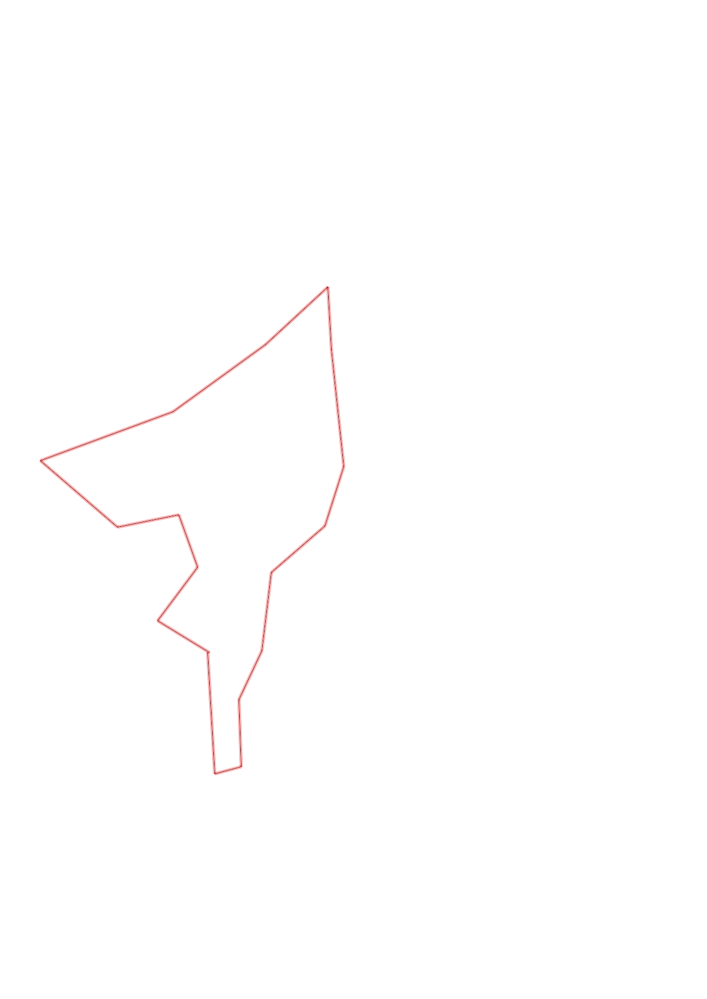
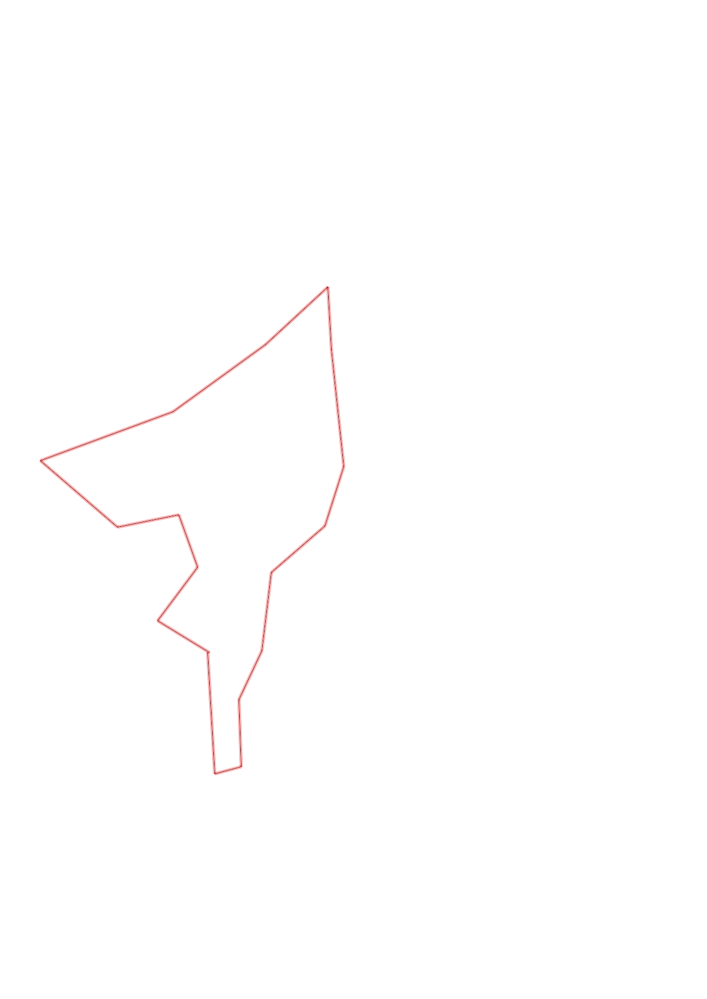

| Control |
Points |
Time Punched |
Distance |
Your Time |
Pace |
Place |
Fastest Time |
Median Time |
% Behind Fastest |
| 31 |
30 |
|
0.54 |
0:04:19 |
07:59 |
2 / 4 |
0:04:11 |
0:04:19 |
3% |
| 42 |
40 |
|
0.12 |
0:01:10 |
09:43 |
3 / 9 |
0:00:52 |
0:01:49 |
34% |
| 37 |
30 |
|
0.3 |
0:02:43 |
09:03 |
4 / 4 |
0:02:25 |
0:02:35 |
12% |
| 63 |
60 |
|
0.24 |
0:03:00 |
12:30 |
1 / 4 |
0:03:00 |
0:03:14 |
0% |
| 41 |
40 |
|
0.35 |
0:03:40 |
10:28 |
2 / 2 |
0:03:33 |
0:03:36 |
3% |
| 91 |
90 |
|
0.32 |
0:04:17 |
13:23 |
2 / 6 |
0:04:09 |
0:04:33 |
3% |
| 36 |
30 |
|
0.28 |
0:03:25 |
12:12 |
2 / 4 |
0:01:58 |
0:03:32 |
73% |
| 34 |
30 |
|
0.53 |
0:03:56 |
07:25 |
3 / 3 |
0:03:06 |
0:03:43 |
26% |
| 39 |
30 |
|
0.28 |
0:02:43 |
09:42 |
3 / 7 |
0:01:51 |
0:02:56 |
46% |
| 65 |
60 |
|
0.38 |
0:03:31 |
09:15 |
4 / 4 |
0:03:02 |
0:03:17 |
15% |
| 53 |
50 |
|
0.51 |
0:04:45 |
09:18 |
4 / 4 |
0:03:48 |
0:04:15 |
25% |
| 92 |
90 |
|
0.63 |
0:08:13 |
13:02 |
3 / 3 |
0:06:58 |
0:08:08 |
17% |
| 72 |
70 |
|
0.46 |
0:06:45 |
14:40 |
4 / 4 |
0:02:51 |
0:04:56 |
136% |
| 58 |
50 |
|
0.28 |
0:02:22 |
08:27 |
1 / 6 |
0:02:22 |
0:03:34 |
0% |
| 51 |
50 |
|
0.25 |
0:01:44 |
06:56 |
2 / 9 |
0:01:43 |
0:02:53 |
0% |
| 35 |
30 |
|
0.3 |
0:02:08 |
07:06 |
1 / 8 |
0:02:08 |
0:02:40 |
0% |
| Finish |
0 |
|
0.27 |
0:01:23 |
05:07 |
1 / 10 |
0:01:23 |
0:01:33 |
0% |
Total Distance Covered: 6.04km
Points Scored: 780
Late Penalty: -20
Final Score: 760
Total Time: 1hours 0minutes 4seconds
Efficiency: 125.83 points/km
 
